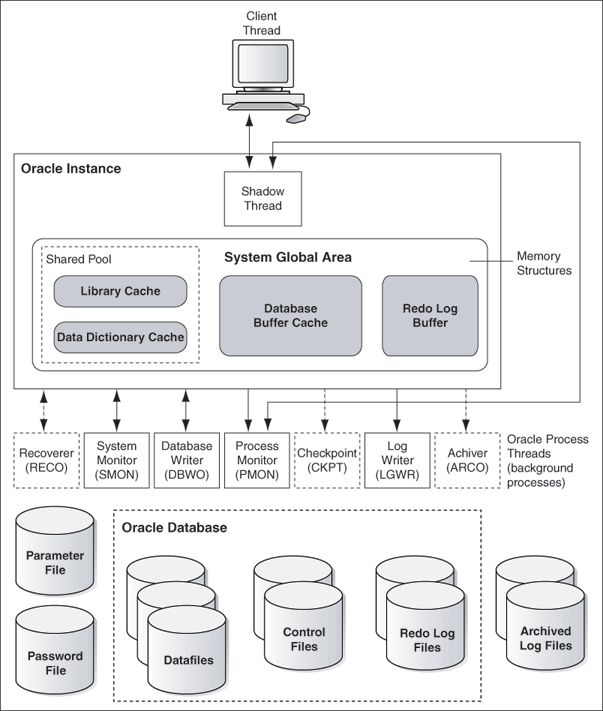

Overview of Oracle Database on Windows Architecture
Oracle Database on Windows is a stable, reliable, and a high-performing system upon which you can build applications. Each release of the database provides new platform-specific features for high performance on Windows.
Oracle Database operates the same way on Windows as it does on the other platforms.
- Oracle Automatic Storage Management
Oracle Automatic Storage Management (Oracle ASM) is an integrated file system and volume manager expressly built for Oracle Database files. - Oracle Automatic Storage Management File Access Control
Oracle ASM File Access Control restricts the access of files to specific Oracle ASM clients that connect asSYSDBA. - Thread-Based Architecture
The internal process architecture of Oracle Database is thread-based. Threads are objects within a process that run program instructions. - File I/O Enhancements
Oracle Database supports 64-bit file I/O to allow the use of files larger than 4 gigabytes (GB).
Parent topic: Oracle Database Architecture on Windows
Oracle Automatic Storage Management
Oracle Automatic Storage Management (Oracle ASM) is an integrated file system and volume manager expressly built for Oracle Database files.
Oracle ASM provides the performance of raw I/O with the easy management of a file system. It simplifies database administration by eliminating the need for you to directly manage potentially thousands of Oracle Database files. It enables you to divide all available storage into disk groups. You manage a small set of disk groups, and Oracle ASM automates the placement of the database files within those disk groups.
Oracle recommends that you use Oracle ASM instead of raw files to store data files. It provides the performance benefits of raw files with much better manageability. Oracle ASM is available for both single instance and Oracle Real Application Clusters (Oracle RAC) databases.
You can store Oracle Cluster Registry and voting files in Oracle ASM disk groups and store database data files in the data disk group. The voting files and Oracle Cluster Registry are two important components of Oracle Clusterware.
Note:
-
You must be logged on either as an Administrator or a user name that is a member of the Administrators group.
-
To open Disk Management console, click Start, Run, and then enter:
diskmgmt.msc. -
Storing data files on raw devices is no longer supported. You must use a file system or Oracle Automatic Storage Management.
-
NFS or Direct NFS cannot be used for Oracle Clusterware files.
Oracle Automatic Storage Management File Access Control
Oracle ASM File Access Control restricts the access of files to specific Oracle ASM clients that connect as SYSDBA.
An Oracle ASM client is a database, which is identified by the name of the user that owns the database instance home. Oracle ASM File Access Control uses this user name to identify a database. Oracle ASM File Access Control restricts access based on the operating system and effective user identification number of a database owner.
- Creation of New User Groups and Users for Separation of Database Administration Duties
Oracle Database 18c provides access control to separate the roles on Windows. - About Disk Group User Replacement
The identity of an Oracle ASM user can be changed from one operating system user to another operating system user. - About Changing File Access Control While the File is Open
Oracle Database 18c enables users to change the ownership, permissions, or group membership of a file even while the file is open.
Parent topic: Overview of Oracle Database on Windows Architecture
Creation of New User Groups and Users for Separation of Database Administration Duties
Oracle Database 18c provides access control to separate the roles on Windows.
With Oracle Database services running under the Oracle Home User account instead of the Local System Account, the Oracle ASM access control feature must be enabled to support role separation on Windows. In previous releases, this feature was disabled on Windows because all Oracle Database services ran under Windows Built-in Local System Account.
The new user groups added are ORA_HOMENAME_DBA, ORA_HOMENAME_OPER, ORA_HOMENAME_SYSBACKUP, and so on. For Oracle ASM administration, new groups ORA_ASMADMIN, ORA_ASMDBA and ORA_ASMOPER are automatically created and populated during Oracle Database installation. The Oracle ASM administrator can manage these Windows groups using Windows tools, though you must ensure that the required user names are not removed from these groups.
About Disk Group User Replacement
The identity of an Oracle ASM user can be changed from one operating system user to another operating system user.
It enables end users to change the identity of an Oracle ASM user without having to delete and re-create the user, which requires dropping all the files a user owns. This feature improves the manageability of Oracle ASM users and the files they own. The SQL Statements ALTER, DISKGROUP, REPLACE, USER, and a new ASMCMD command (rpusr) have been added to support user replacement in a disk group.
About Changing File Access Control While the File is Open
Oracle Database 18c enables users to change the ownership, permissions, or group membership of a file even while the file is open.
Since this release, the ASMCMD file access control commands, such as chgrp, chmod, and chown, can run even while the file is open. The SQL statements, such as ALTER, DISKGROUP, MODIFY,and USERGROUP commands have also been modified as these SQL statements provide support for these ASMCMD commands.
Thread-Based Architecture
The internal process architecture of Oracle Database is thread-based. Threads are objects within a process that run program instructions.
Threads allow concurrent operations within a process so that a process can run different parts of its program simultaneously on different processors. A thread-based architecture provides the following advantages:
-
Faster context switching
-
Simpler System Global Area allocation routine, because it does not require use of shared memory
-
Faster spawning of new connections, because threads are created more quickly than processes
-
Decreased memory usage, because threads share more data structures than processes
Internally, the code to implement the thread model is compact and separate from the main body of Oracle Database code. Exception handlers and routines track and deallocate resources. They add robustness, with no downtime because of resource leaks or program that does not function as expected.
Oracle Database is not a typical Windows process. On Windows, an Oracle Database or Oracle Automatic Storage Management instance (threads and memory structures) is a Windows service: a background process registered with the operating system. The service is started by Windows and requires no user interaction to start. This enables the database to open automatically at computer startup.
When running multiple Oracle Database or Oracle Automatic Storage Management instances on Windows, each instance runs its own Windows service with multiple component threads. Each thread is required for the database to be available, or is optional and specific to certain platforms. The background processes read and write from various data files, depending on your configuration. Oracle Database architecture on Windows is illustrated in Oracle Database Architecture on Windows. Examples of Oracle Database required threads on Windows are listed in Oracle Database Threads.
Figure 1-1 Oracle Database Architecture on Windows
Description of "Figure 1-1 Oracle Database Architecture on Windows"
Table 1-1 Oracle Database Threads
| Oracle Database Thread | Description | Required/Optional |
|---|---|---|
|
|
database writer |
Required |
|
|
log writer |
Required |
|
|
memory manager process |
Required |
|
|
process monitor |
Required |
|
|
process spawner process |
Required |
|
|
system monitor |
Required |
|
|
checkpoint process (thread on Windows) that runs by default on Windows |
Required |
|
|
archive process (or thread on Windows) |
Required |
|
|
distributed recovery background process |
Required |
Note:
You can view running background processes by entering the following query:
SQL> select * from v$bgprocess where paddr <> '00';
Oracle Database for Windows is supplied as a set of executables and dynamic link libraries (DLLs). Executable images can be modified using ORASTACK to change the size of the stack used by the threads of the Oracle Database process. Oracle recommends that you use this tool only under the guidance of Oracle Support Services.
Parent topic: Overview of Oracle Database on Windows Architecture
File I/O Enhancements
Oracle Database supports 64-bit file I/O to allow the use of files larger than 4 gigabytes (GB).
In addition, physical and logical raw files are supported as data, log, and control files to support Oracle Real Application Clusters (Oracle RAC) on Windows and for those cases where performance must be maximized.
Instead of using the operating system kernel NFS client, you can configure Oracle Database to access NFS V3 servers directly using an Oracle internal Direct NFS client. Through this integration, Oracle can optimize the I/O path between Oracle and the NFS server, resulting in a significantly superior performance. In addition, Direct NFS client simplifies and optimizes the NFS client configuration for database workloads.
Now, the Direct NFS client supports all widely accepted NFS path formats, including both Windows-style and UNIX-style NFS paths.
Volumes mounted through CIFS cannot be used for storing Oracle database files without configuring the Direct NFS client. The atomic write requirements needed for database writes are not guaranteed through the CIFS protocol. Consequently, CIFS can be used only for operating system-level commands such as, copy, move, and so on.
The Direct NFS client currently supports up to four parallel network paths to provide scalability and high availability. The Direct NFS client delivers optimized performance by automatically load balancing requests across all specified paths. If one network path fails, then the Direct NFS client resends commands over any remaining paths ensuring fault tolerance and high availability.
A new parameter called dnfs_batch_size is now added to control the number of asynchronous I/O operations that can be queued by an Oracle process when the Direct NFS client is enabled. Set this parameter only if the Direct NFS client is overwhelming the NFS server or the network. This parameter helps the user to manage the load that the Direct NFS client can generate. In typical environments, you must not set this parameter. The default value of this parameter is 4096. To reduce the Direct NFS client load, Oracle recommends a value of 128 that can be changed based on the NFS server performance.
See Also:
Your vendor documentation to complete NFS configuration and mounting
Parent topic: Overview of Oracle Database on Windows Architecture